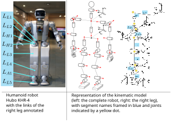
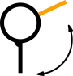
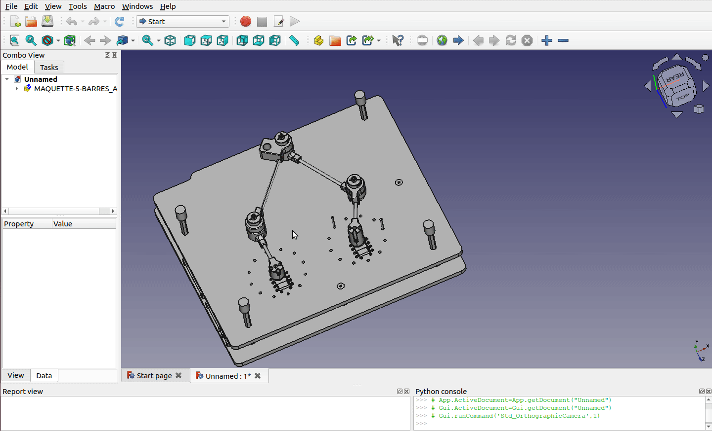

Modeling the geometry of a rigid robot with URDF and SDF
Here we only consider rigid robots, that is, a system composed of rigid parts that move relative to each other. Therefore, we exclude robots with flexible parts such as a system where 2 rigid parts are connected by an elastic band.
A rigid robot model is divided into 2 categories of parts:
the
linkswhich correspond to the rigid parts of the robot andthe joints (
jointin English) which correspond to the possible movements between two rigid parts.
Between 2 links (noted L on the Figure 2), there is always a joint (noted by yellow dots, on the Figure 2).
{kind=link}

Figure 2 Geometric model of the kinematics of a rigid robot (source: [APL10])
We can also find the word liaison for a joint in reference to mechanical connections (sliding connection, pivot, etc. cf. the 12 types of mechanical connections) however, due to the proximity with the word link, we prefer to use the word joint.
From a kinematic point of view, we most commonly use 3 types of joints among the 12 types of mechanical connections:
Figure 3 Prismatic joint
prismatic joint in English){kind=link}

Figure 4 Revolute joint
revolute joint in English)Figure 5 Fixed or rigid joint
fixed or rigid joint in English)2D symbols of the most common joints for a robot
The goal of the geometric model is to be able to describe the position in space of each link of the robot over time, taking into account the movements made by the joints.
As a modeling task, it is critical to identify the parts of the model that may present the most significant deviations from reality.
Links
A Link is a rigid part of the robot, that is, a solid. It is defined by its geometry, that is, its surfaces (Boundary Representation or B-Rep) and its scale. Its surfaces can be provided in the following ways:
implicit: zeros of mathematical equations. For example, for a sphere \(f(x, y, z) = x^2+y^2+z^2-r^2 = 0\).
analytic: by the equations of the surfaces. For example, for a sphere: \((x, y, z) = (r \cos(\theta) \sin(\phi), r \sin(\theta) \sin(\phi), r \cos(\phi))\).
discretized: by a mesh consisting of polygons, or by parameters of constructive methods such as B-splines, Bézier surfaces, or NURBS.
A combination of the 3 types of representations is possible to represent a link.
There are several types of approximations in the modeling of a link:
the modeled geometry is different from the actual geometry of the link due to the manufacturing process of the latter and manufacturing tolerances.
if the geometry is discretized, then the mesh density is an approximation of reality. In this case, it may be a scan of the link but also a representation that differs from the manufacturing process (for example, a discretized cylinder, whereas the part was made with a lathe).
the rigidity of the link is an approximation of reality. Indeed, no material is perfectly rigid.
In ROS, a link can be defined in 2 ways:
by one of the 3 geometric primitives: box, cylinder, or sphere
by a mesh file in collada format (file with .dae extension)
It is possible and easy to export a step or stl mesh file to a collada file. Many CAD software allow exporting a model to a collada file.
In particular, the free software FreeCAD allows exporting a model to a collada file.
Starting from a complete robot model in step format, we will try to export only one link of the robot.
Launch freecad from a terminal:
freecad maquette-5-barres_asm.stp
{kind=link}

You can download the generated collada file:
The collada format is very interesting because it is very complete. It contains, of course, the 3D geometry of the link (in many BREP formats, including B-spline and NURBS), but it can also contain information:
surface color,
volume transparency,
texture,
materials per face,
material profiles with Phong, Lambert parameters for lighting equations,
normals, binormals, tangents, texture coordinates, colors associated with the vertices of the surfaces,
we can even add custom attributes to the surface vertices, allowing for specific calculations, especially for simulation.
This allows a more realistic visualization of the link and in particular that lighting models are taken into account.
Joints
Among all the rigid joints, we mainly use:
The prismatic joint allows a translational movement without rotation between two rigid links. The linear movement can be achieved by a slider, a cylinder, or a rack, for example.
The pivot joint which allows a rotation without translation. This is the type of joints used in an anthropomorphic robotic arm. The symbolic notation in 3D is a cylinder around the axis of rotation as in the leg of the humanoid robot in the Figure 2.
The last joint is a special case, it corresponds to a mechanical connection that does not allow any relative movement between the two links. It can be achieved by welding, bolting, or gluing two parts together, for example. An example is given by the fixed joint between link \(L_{L1}\) and link \(L_{L2}\) of the Figure 2.
From a practical point of view, one might wonder why not have a single link composed of the union of the 2 links involved in the fixed joint rather than a joint since the relative movement is zero. This joint is fundamental because it serves to model a rigid assembly of distinct links.
However, we know that our model is only an approximation and in particular that the available information on the assembly (the relative position of one link to another) can be both imprecise and variable over time. Therefore, it is essential to be able to modify the relative position of the links to account for these inaccuracies using calibration procedures.
In particular, if the assembly is subjected to mechanical stress, it is useful to have the ability to change the relative position of the assembly to account for deformations related to this stress. Thus, if we are able to perform dynamic tracking of the relative position of the links, representing the fixed joint by a joint allows us to obtain an adaptable and therefore faithful model of the robot over time.